Potztausendschön Verein für Umweltbildung und Kulturförderung in Bremen e.V.

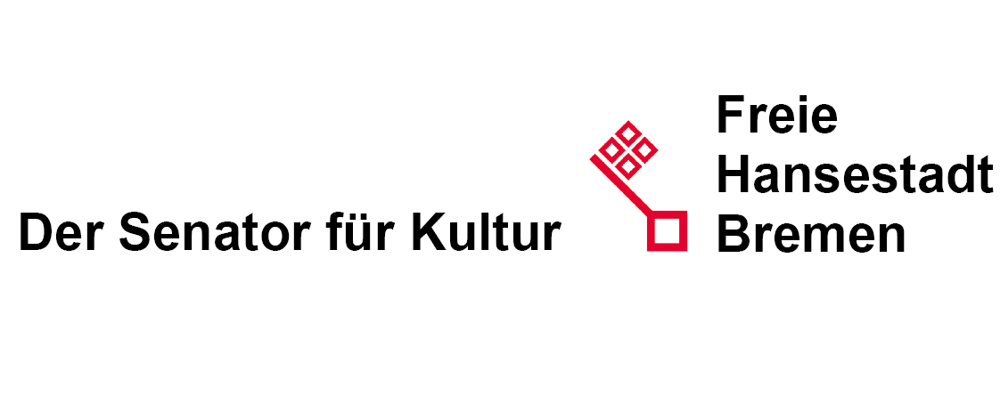
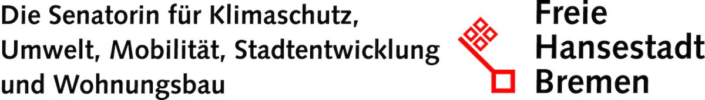
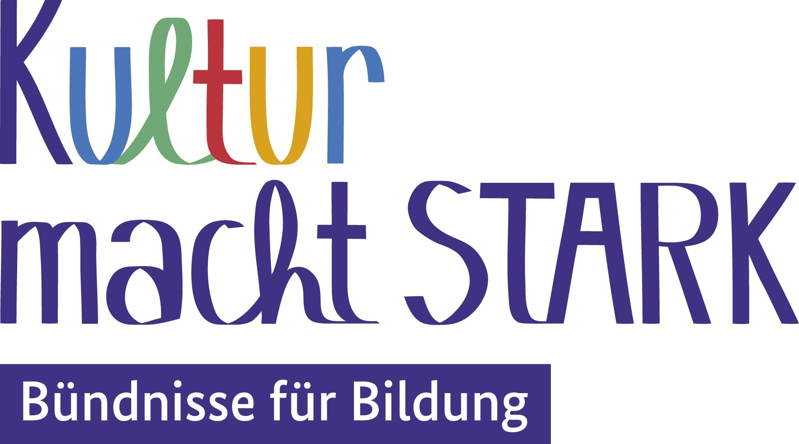
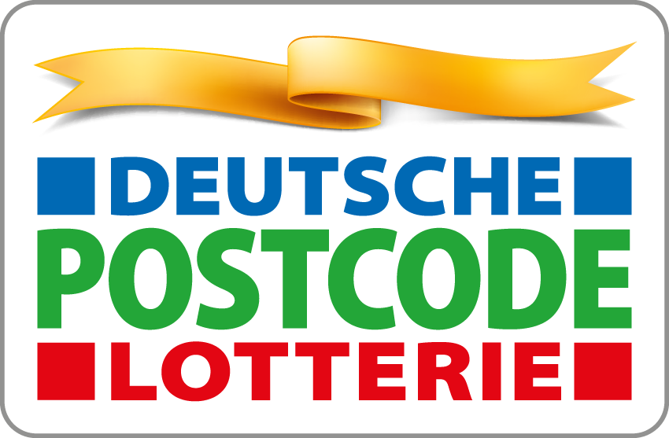
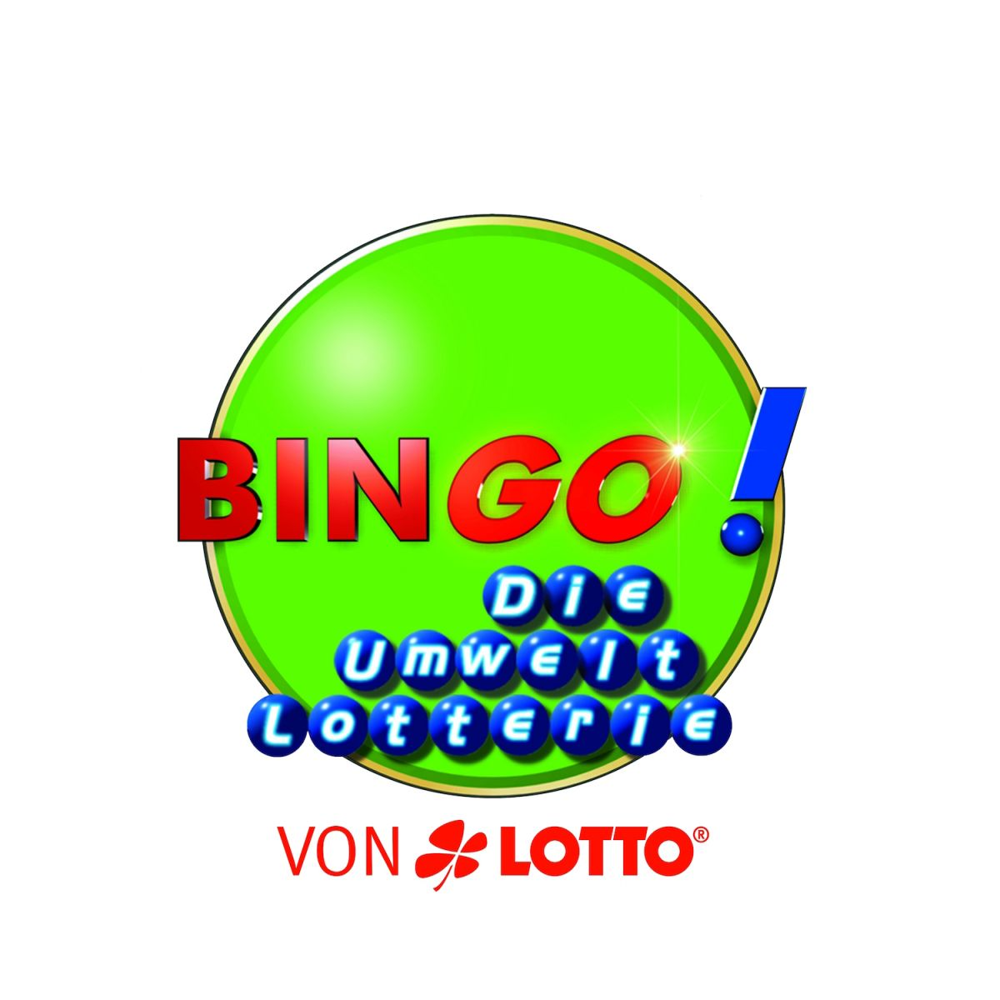
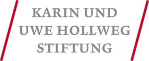
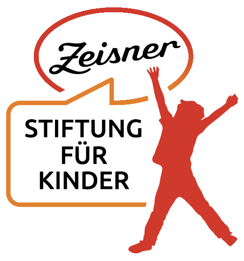
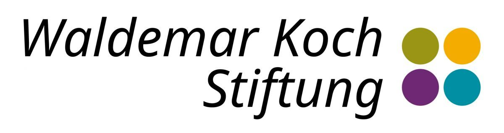
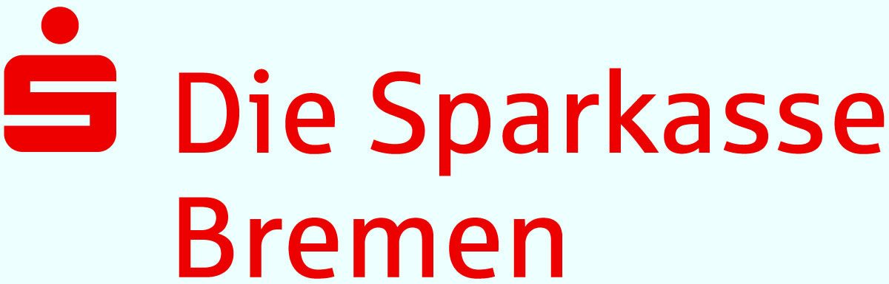
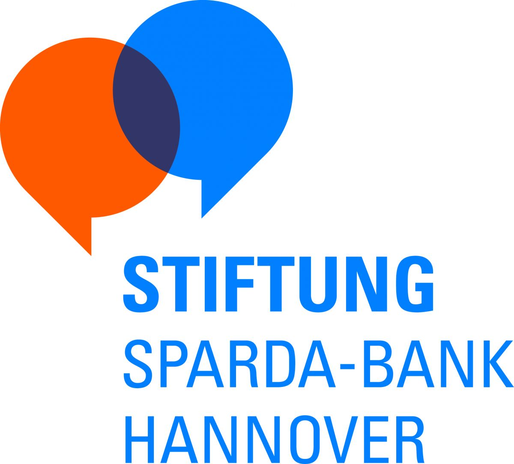
Die Intention, warum wir umwelt- und theaterpädagogische Projekte für Kita- und Grundschulkinder in Bremen anbieten, ist — möchte man es ganz herunterbrechen — die Überzeugung, dass es zu einer wertvollen Ressource werden kann, Menschen schon früh zu ermöglichen, wieder mit dem in Berührung zu kommen, was uns hält und verbindet. Eine Ressource, von der ein Leben lang gezehrt werden kann und von der alle Kinder, insbesondere auch jene mit herausfordernden Startbedingungen auf ihrem Weg in dieser Welt, profitieren können.
Unsere Projekte für Kinder zielen auf den langfristigen Effekt einer gestärkten Selbstwirksamkeit durch das positive Erleben in einer Gruppe, die Verbundenheit mit unserer lebendigen Umwelt und der darin angelegten Begegnung der eigenen sinnlichen Erfahrungswelt.


Im naturbelassenen Ambiente des LichtLuftBades laden wir zu phantastischen Erlebnistagen mit einer Aufführung des Bienentheaters und spannenden, lehrreichen umweltpädagogischen Spielangeboten.
Der Vormittag beginnt mit einer Aufführung des Bienentheaterstücks im Circuszelt. Danach haben die Kinder im Klassenverbund die Möglichkeit, an verschiedenen Workshop-Stationen die inhaltlichen Themen des Theaterstücks spielerisch zu vertiefen. Sie werden dabei von einem erfahrenen Team aus Umwelt- und Theaterpädagog:innen begleitet. Lehramtsstudent:innen der Bremer Uni unterstützen die Gruppen im Rahmen eines Praxisseminars von Dr. Angela Bolland.
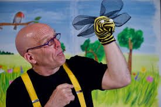
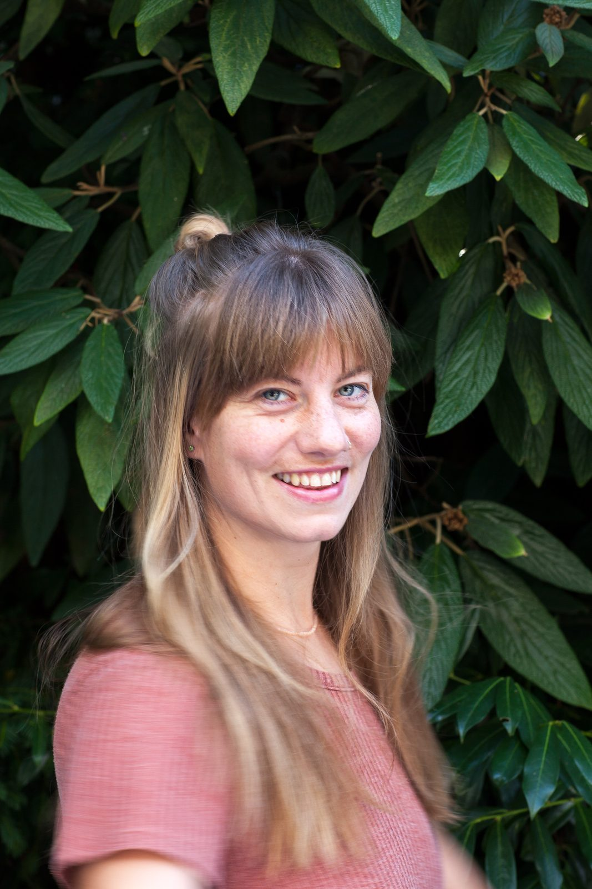
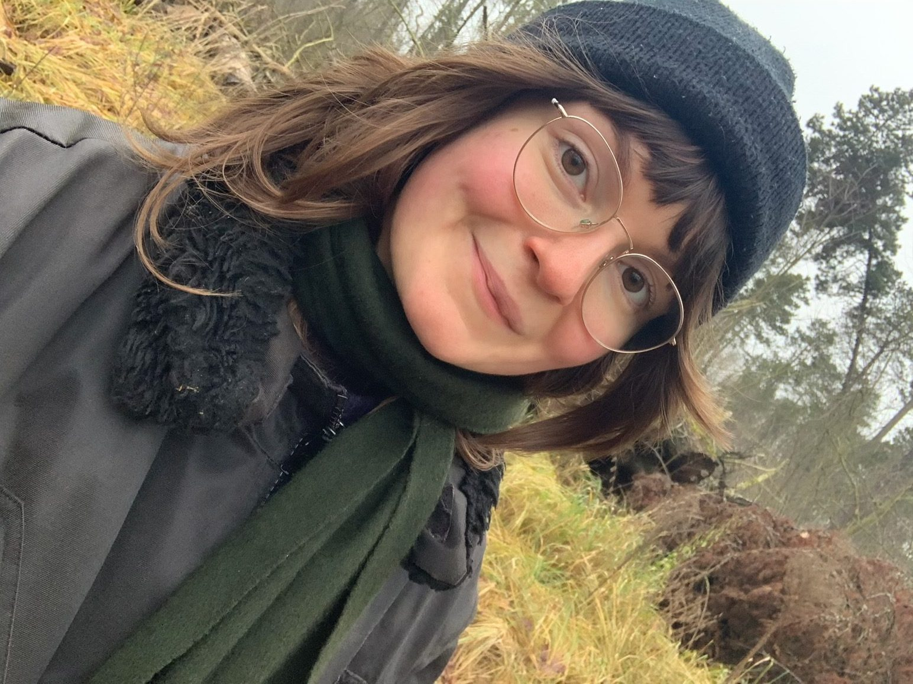
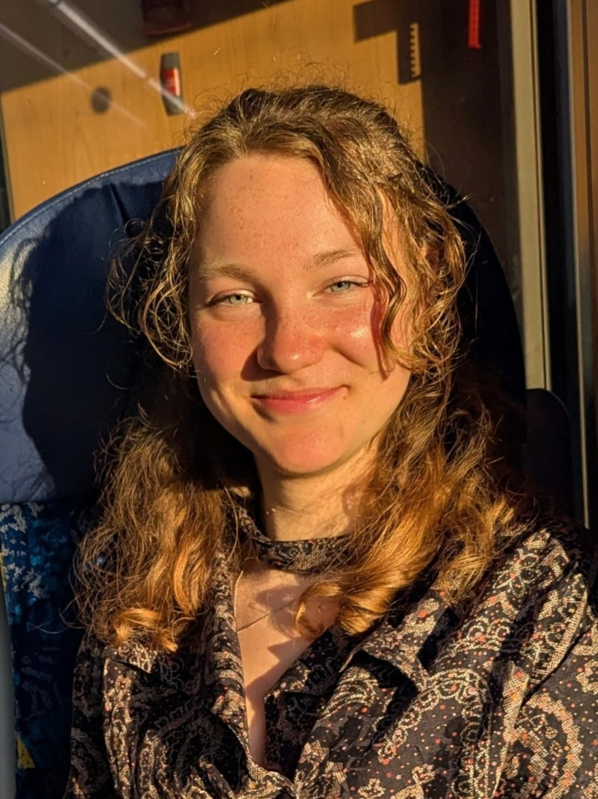
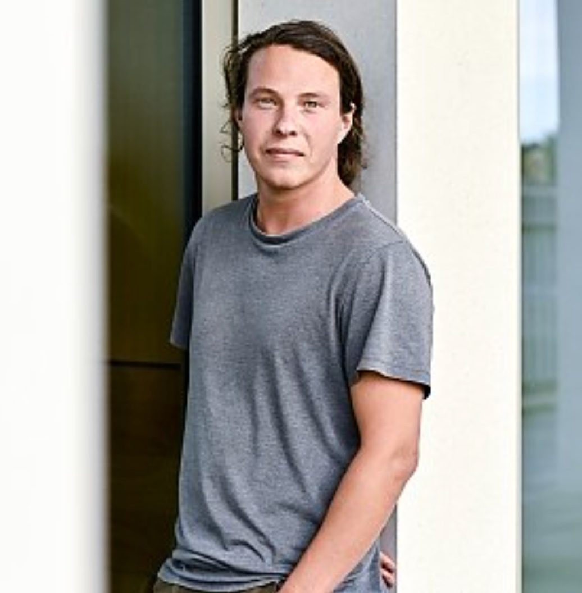
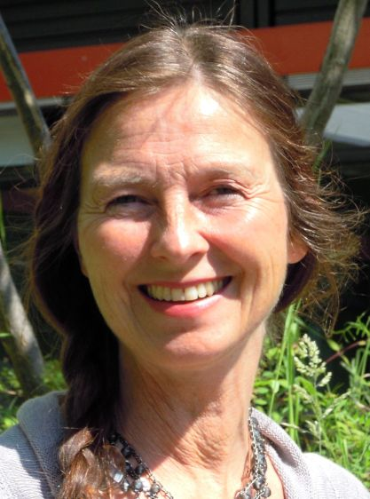
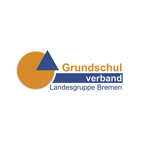
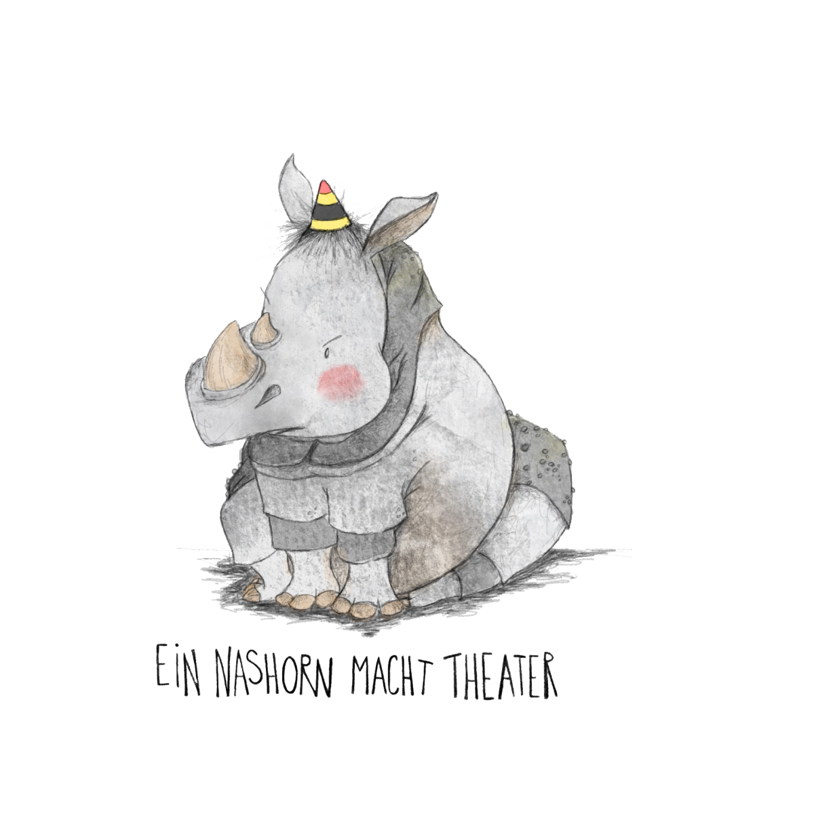
Ein Nashorn macht Theater ist eine interaktive Erzähltheaterinszenierung für die Abschlussgruppen der Kita. Es wurde von einem Team aus den Bereichen Schauspiel, Pädagogik, Kinderliteratur und Illustration als Erzähltheaterstück für Vorschulkinder entwickelt. Seit 2022 findet das Projekt in bremischen Kitas in Form eines Projektmonats statt. Im Fokus stehen Sprachbildung und Konfliktlösungsstrategien wie auch der Umgang mit Gefühlen.
Ziel des Theaterprojekts ist es, Vorschulkinder mit der Kunstform Theater und den für sie zentralen Entwicklungsthemen in Berührung zu bringen. Eines der zentralen Ziele ist es, einen Beitrag dazu zu leisten, Kindern einen Umgang mit den eigenen Gefühlen zu vermitteln. Zentrales Anliegen ist es, den Kindern zu vermitteln, wie sie ihre Emotionen verbalisieren und reflektieren können. Dadurch wird ihnen auch der Zugang zu den Emotionen anderer Menschen erleichtert. Somit werden nicht-körperliche Konfliktlösungen bei zukünftigen Streitigkeiten begünstigt. Ziel ist es, die Kinder mit Fähigkeiten auszustatten, welche sie zukünftig dabei unterstützen, mit Emotionen und Wut insgesamt besser umgehen zu können.
Ein weiteres Ziel ist es, durch die Begegnung mit Kunst und Theater eine intrinsische Motivation zu wecken und das grundlegende Interesse am künstlerischen Freiraum zu fördern. Dabei wird die Kunst als positives Erlebnis präsentiert und die Teilhabe an dieser ermöglicht. Es wird nicht nur passiv Kunst konsumiert, sondern aktiv mit produziert und gestaltet. Es ist das Ziel, die Kinder dabei zu unterstützen, sich selbst und die Sprache als Mittel der Selbstwirksamkeit wahrzunehmen. Die Kinder werden in ihrer Lust auf sprachlichen und körperlichen Ausdruck bestärkt und es werden ihnen neue Handlungsmöglichkeiten für ihre Selbstwahrnehmung und ihr Sozialverhalten, insbesondere im Umgang mit Konflikten, eröffnet.

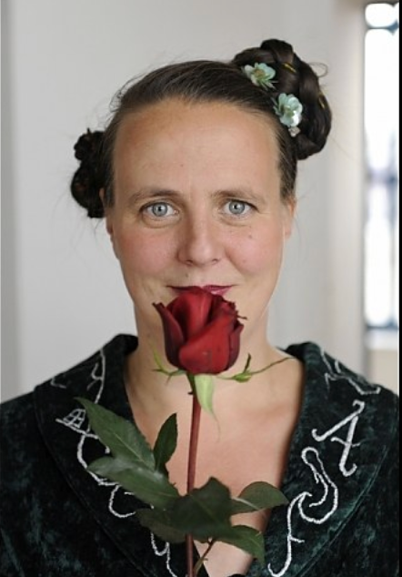
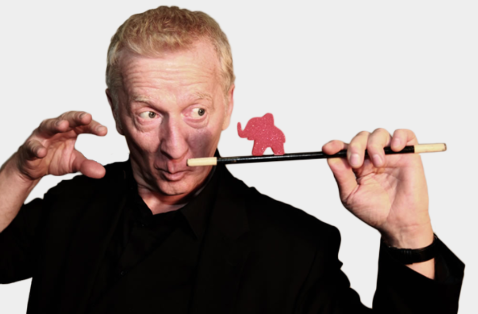
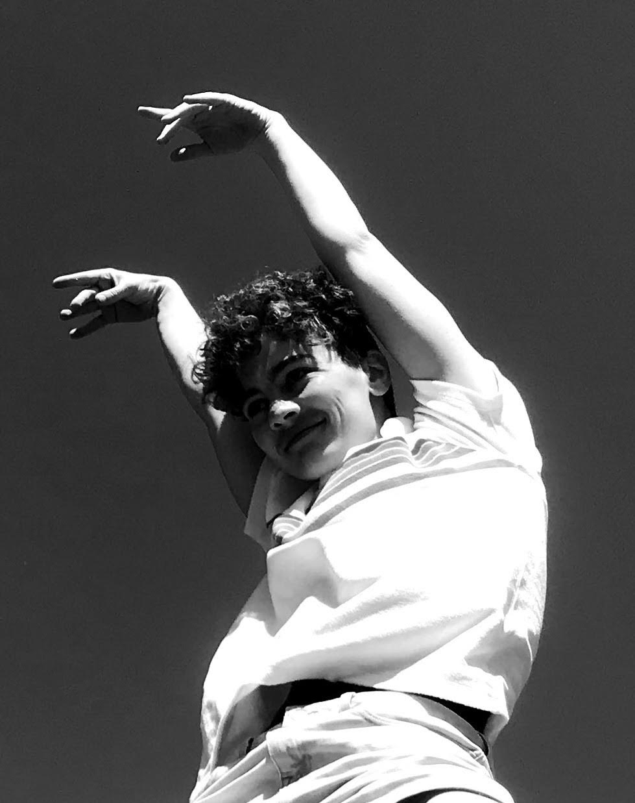
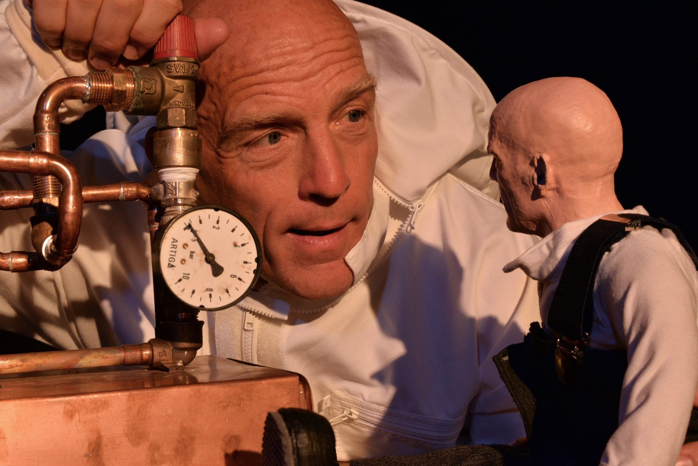


Die laufenden Spieltermine im Theatergarten für die Saison 2026 finden Sie direkt auf der Seite unseres Kooperationspartners.
Zu den Spielterminen ↗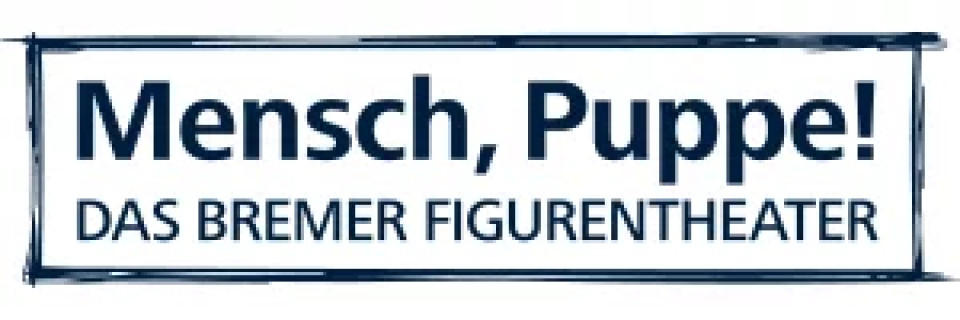
Thematisch soll es um die Bedrohung der natürlichen Kreisläufe in der Natur durch uns Menschen gehen. Anhand der Geschichte einer Raupe, die zum Schmetterling wird, soll das Thema kindgerecht bearbeitet und gemeinsam mit den Kindern nach einer Lösung im Sinne des Umweltschutzes geforscht werden.
Neben dem Theatererlebnis im kleinen Circuszelt soll ein theatral inszenierter Rundweg durch das naturbelassene Ambiente des LichtLuftBades für die Kinder ein besonderes (Natur-)Erlebnis sein, das sie behutsam in die Geschichte einführt.
Mit Elementen aus Figurentheater, Musik und Storytelling soll ein mitreißendes und zugleich informatives Theaterstück entstehen, das den Kindern die faszinierende Welt der Schmetterlinge und Insekten näherbringt.
In Kooperation mit der Figurenspielerin Johanna Pätzold und der Schauspielerin Julia Klein.
In einer poetisch-phantasievollen und zugleich lehrreichen Geschichte ist es dem Schauspieler Sven Hegeler gelungen, die faszinierende und bedrohte Lebensweise der Bienen und Insekten in kindgerechter Form lebendig werden zu lassen.
Mit den Elementen Erzähltheater, Musik und Zauberei wird die Geschichte eines Circusclowns erzählt, der seine Liebe zum Imkern und den Bienen entdeckt. Die Bedrohung der Natur wird durch einen giftspritzenden Arbeiter dargestellt. Gemeinsam mit den Kindern werden im Theaterspiel verschiedene Lösungsmöglichkeiten erkundet und spielerisch umgesetzt.


Für Vorschulgruppen, mit Spielanregungen und Sachmaterial
PDF herunterladen ↓Für die Eingangsstufe, mit Material zur Vor- und Nachbereitung
PDF herunterladen ↓Für die Klassen 3 und 4, mit vertiefenden Sachinformationen
PDF herunterladen ↓Ein Programm zur Sprachförderung für die Abschlussgruppen der Kitas.
In diesem Theaterprogramm dient der Vortrag und die improvisierten Szenen des Schauspielers als Angebot an die Kinder, selber sprachaktiv in die Geschichten einzusteigen. Die Rahmenhandlung der Kamishibai-Geschichten ist die Einladung für die Kinder, aktiv zu werden. Zuhören und freies Sprechen vor der Gruppe können hier mit der einfühlsamen Teilnahme des Schauspielers erfahren und von den Kindern umgesetzt werden.


Der Schauspieler, Clown und Artist Sven Hegeler wurde 1961 in São Paulo geboren. Seine Ausbildung absolvierte er an der Artistenschule in Berlin. Er wirkte in verschiedenen Circus- und Varieté-Inszenierungen mit, u.a. Circus Roncalli, Traumtheater Salome, Wintergartenvarieté Berlin.
Bis 1990 verschiedene Engagements in Deutschland und Europa (Circus Roncalli, Traumtheater Salome, Expo Sevilla, Festas de Lisboa, Kultursommer Copenhagen). Ab 1995 Zusammenarbeit mit dem Kölner Spielecircus und Entwicklung der Kindermitmachcircus-Idee. Ab dem Jahr 2000 eigene Kindertheater-Produktionen, ausgezeichnet als „Kindertheater des Monats" in Nordrhein-Westfalen.
2019 gründete er Potztausendschön e.V., dessen Geschäftsführer er seitdem ist.